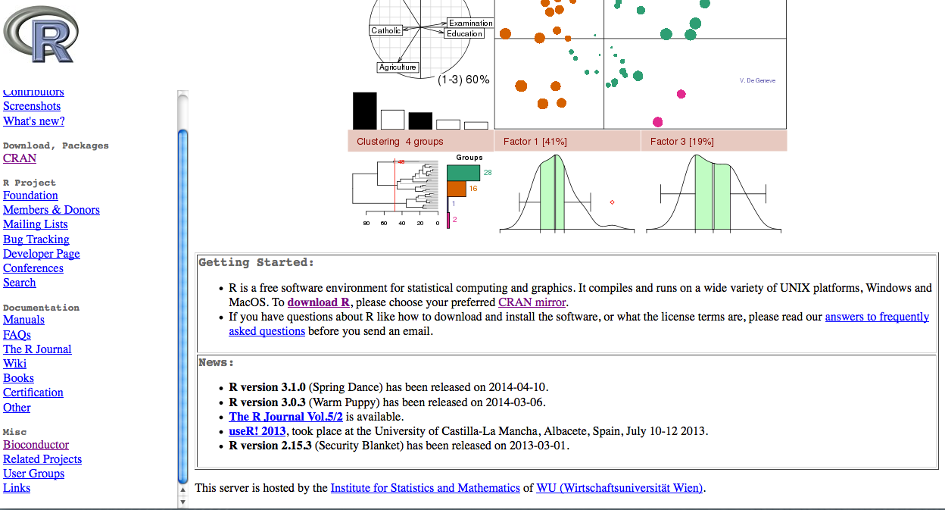
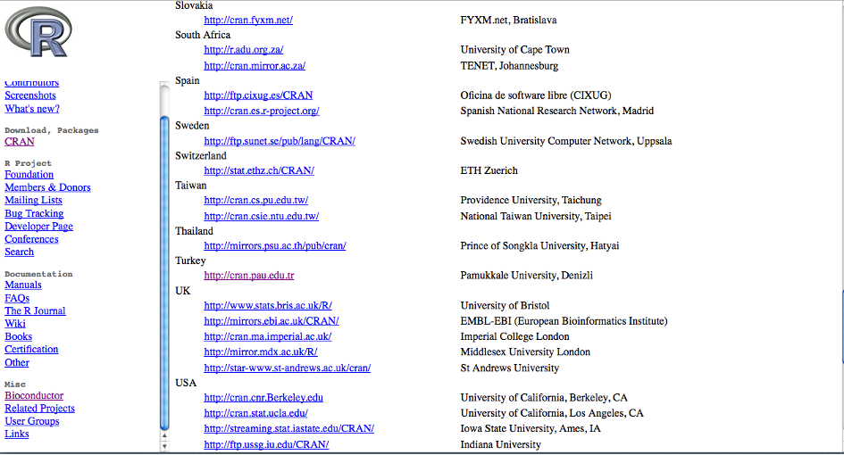
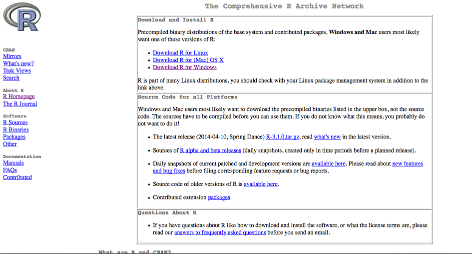
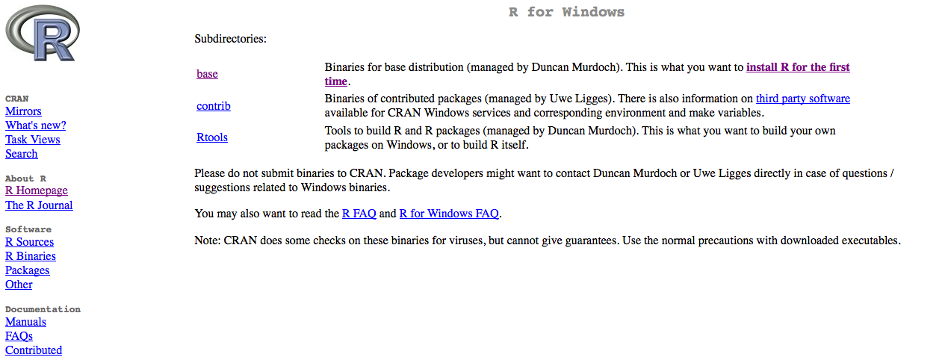
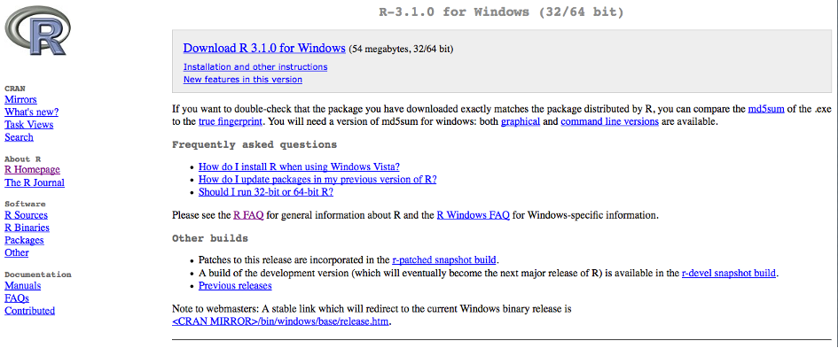
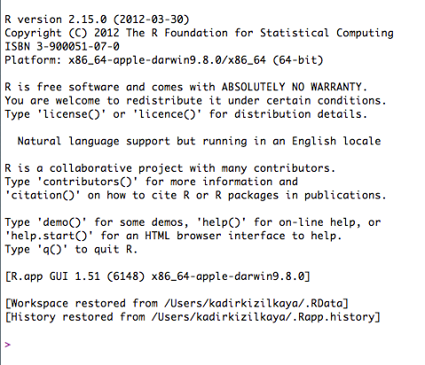

2 R Programının Kurulumu
R programı, PC-Windows, Apple Mac-OS ve Linux işletim sistemli bilgisayarlara kolayca kurulabilir. PC-Windows işletim sistemi için R.exe, Apple Mac için R.dmg ve Linux için de R kurulum dosyaları kullanılmaktadır. Gerekli kurulum dosyalarının en son versiyonu R programla dilinin resmi internet sitesi CRAN (Comprehensive R Archive Network)’den indirilebilir. İndirilen kurulum dosyası, tıklanarak çalıştırılır ve ileri (next) tuşuna tıklayarak programın kurulumu gerçekleştirilir. Kurulum tamamlandıktan sonra bilgisayarın Masaüstü’ne R programının ikonu olan R simgesi yüklenecektir.
2.1 R programının Genel Özellikleri
2.1.1 R Programının İndirilmesi ve Kurulması
R programıyla ilgili resmi internet sitesi Şekil 2.1’de görüldüğü gibi Comprehensive R Archive Network (CRAN)’dir ve www.cran.r-project.org veya www.r-project.org adresleriyle ulaşılabilir. R programıyla ilgili gelişmeler internet sitesinden izlenebileceği gibi gerekli programlara ve bilgilere bu internet sitesi aracılığıyla da ulaşılabilir.

Şekil 2.1: R programının resmi internet sites
R programıyla ilgili gerekli programlara ve paketlere kolayca ulaşabilmek için dünyanın farklı yerlerinde tanımlanmış internet adresleri bulunmaktadır. İhtiyaç duyulan R programına ait paketler indirilmek istendiğinde en yakın internet adresi seçilerek dosya indirme işlemi gerçekleştirilebilir. Türkiye için Şekil 2.2’de görüldüğü gibi Pamukkale Üniversitesi için tanımlanan http://cran.pau.edu.tr adresinden indirilebilir. Bu alan seçildiğinde artık R programıyla ilgili bütün program ve paket indirme işlemleri bu alandan gerçekleştirilebilmektedir.

Şekil 2.2: R programı için mevcut internet siteler
Daha önce de belirtildiği gibi R programı PC-Windows, Apple Mac-OS ve Linux işletim sistemlerinde çalıştıralabilmektedir. Bu amaçla, Şekil 2.3’de görüldüğü gibi kullandığınız işletim sistemiyle uyumlu olan R programı kolayca seçilebilmektedir. Burada PC-Windows işletim sistemi kullanıldığı kabul edilerek Download R for Windows’a tıklandığında Şekil 2.4’de verilen internet sayfasına yönlendirilerek Windows işletim sistemiyle uyumlu farklı şekilde derlenmiş R programları indirilebilir.

Şekil 2.3: PC-Windows, Apple Mac-OS ve Linux işletim sistemleri için R programı
Şekil 2.4’de verilen base seçeneğine tıklandığında Şekil 2.5’de görülen sayfaya yönlendirilerek önceden derlenmiş Download R for Windows dosyası indirilerek kurulum gerçekleştirilebilir (R programının Download R3.1.1 for Windows gibi en son versiyonunu belirtmektedir).

Şekil 2.4: R programının farklı şekilde derlenmiş türleri

Şekil 2.5: R programının PC-Windows işletim sistemi için kurulum dosya
2.1.2 R Programını Başlatmak ve Kapatmak
R programını kullanmanın en kolay yolu, komut yazma ve sonuç alma şeklinde interaktif olarak kullanmaktır. R programı PC-Windows veya Mac OS X işletim sistemli bilgisayara kurulduktan sonra, R ikonuna tıklayarak başlatılabilir ve Şekil 2.6’da verilen programın grafiksel kullanıcı arayüz penceresi açılır.

Şekil 2.6: R programının kullanıcı arayüzü (konsol)
R konsolunda yer alan açılış mesajının altında > “büyüktür” işareti yer alır. Birçok kısımda, R programı içerisindeki komutlar veya ifadeler R konsol penceresine doğrudan yazılır.
R programı başlatıldığında, Şekil 2.6’da verilene benzer bir şekilde komut satırı belirir.
R konsolunda > durumunda yapılacak işlemle ilgili komut girildiğinde R programı işlemi gerçekleştirir ve sonucu konsol ekranına yazar.
y <- 1 + 2
y ## [1] 3Ayrıca, R programında aşağıda verilen grafik türünde bir çıktı oluşturulacak ise bu çıktı, açılan yeni grafik penceresinde görüntülenir.

İşlemler için yazılan komut bir satıra sığmayacak kadar 128 karakterden uzun olduğunda veya tamamlanmadan işlem yapıldığında, komut yazma işleminin devam ettiğini belirtmek için yeni satırın başında ‘+’ işareti görüntülenir. Bu durumda, komutun eksik olan kısmı “+” işaretinden sonra tamamlanarak enter tuşuna basılır ve işlem gerçekleştirilir.
y <- 3*
+ 2
y ## [1] 6R konsol veya komut penceresinde q() yazarak veya pencereler doğrudan kapatılarak R programından çıkılabilir. R programından çıkış tamamlanmadan önce R oturumunda gerçekleştirilen işlemlerin kaydedilip edilmeyeceğini belirten Şekil … deki gibi bir pencere ortaya çıkar ve bu oturumda işlemler Yes (Evet) tuşuna tıklanarak çalışma klasörü içerisine .Rhistory şeklinde kaydedilir. Böylece, aynı işlemlere gelecek oturumda devam edilmek istendiğinde bu .Rhistory dosyası kullanılarak R programı açılır ve önceki oturumda oluşturulan nesneler (değişkenler) tekrar belleğe yüklenir.
2.1.3 Paket Kurulumu
R programında kullanılacak bütün fonksiyonlar paketler halinde tanımlanmıştır. Gerekli fonksiyonları kullanmak için yapılması gereken fonksiyonla ilgili paketinin install.packages() komutu kullanılarak R programı içerisinde bilgisayara kurulmasıdır. Bu komut içerisinde her hangi bir paket ismi belirtilmeden install.packages() şeklinde kullanıldığında CRAN sisteminde mevcut bütün paketler listelenecektir ve paketlerden bir tanesi seçildiğinde bu paket bilgisayara indirilerek kurulacaktır. Buna karşılık, ggplot2 gibi bir grafik paketi yüklenmek istendiğinde install.packages(ggplot2) şeklinde tanımlanarak gerçekleştirilebilir.
Fonksiyonla ilgili gerekli paketin bilgisayara bir kez kurulması yeterlidir. Fakat, paketi oluşturan yazarlar paketler güncellenebilmektedir. Bu yüzden, belirli aralıklarla paketlerin kurulumunun da update.packages() komutu kullanılarak güncellenmesi R programının daha etkili kullanımını sağlayacağından önemlidir. Bilgisayarınıza yüklü paketlerin listesi, versiyon numarası, ilişkili olduğu diğer paketler ve özellikleri installed.packages() komutu kullanılarak görülebilir.
2.1.4 Paket Yükleme
Herhangi bir R programında herhangi bir fonksiyonun paketi, dünyanın farklı yerlerindeki CRAN internet sitelerinden bilgisayardaki R programına ait kütüphaneye indirilebilir. R programında açılan bir oturumda bir fonksiyon kullanılmadan önce library() komutuyla fonksiyonla ilgili gerekli paket yüklenmelidir. Örneğin ggplot kullanılarak grafik çizdirilmek istendiğinde
şeklinde yüklenmelidir. Gerekli paketin açılan oturumda bir kere yüklenmesi yeterlidir. Fakat, oturum kapatıldığında ve açılan yeni oturumda bu paket tekrar kullanılmak istendiğinde yine library() komutuyla tekrar yüklenmelidir. Çok sık kullanılan fonksiyonlara ait paketler bilgisayarın başlatma komutlarına eklenerek doğrudan yüklenmeleri de sağlanabilir.
2.1.5 Paketler
R programı matematiksel, istatistiksel ve grafiksel işlemlerle ilgili paketleri içermektedir. Bu paketler, konularla ilgili fonksiyonların, verilerin ve derlenmiş kodların bir bütün halinde R programında sunulması olarak düşünülebilir. R programındaki paketlere ait kütüphanenin bilgisayarın neresinde oluşturulduğu .libPaths() komutuyla öğrenilebilir. Ayrıca library() komutuyla hangi paketlerin yüklü olduğu da kolayca belirlenebilir.
## [1] "/Library/Frameworks/R.framework/Versions/4.2/Resources/library"R programında bir oturum başlatıldığında base, datasets, utils, grDevices, graphics, stats ve methods paketleri standart olarak doğrudan yüklenmektedir. Ayrıca, ihtiyaç duyulan paketler de yukarı da açıklandığı şekilde yüklenebilir. Buna ek olarak, hangi paketlerin yüklendiği ve kullanım için hazır olup olmadığı search() komutu kullanılarak belirlenebilir.
search()## [1] ".GlobalEnv" "package:ggplot2" "package:stats"
## [4] "package:graphics" "package:grDevices" "package:utils"
## [7] "package:datasets" "package:methods" "Autoloads"
## [10] "package:base"